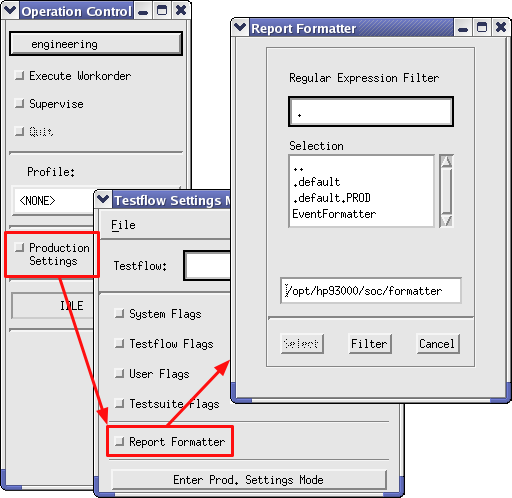

Activating the Event Formatter
This section describes how to activate the Event Formatter.
To activate the Event Formatter, select EventFormatter in the Report Formatter window and click Select:

Selecting the Event Formatter automatically sets the log_events_enable system flag, that is, activates event logging (see Activating event data logging for further information). Then the .formatterrc file is read to configure the Event Formatter:
- First, the .formatterrc file in your home directory is read. This file contains your individual settings for the Event Formatter. If the file exists, the message "Set parameters according to file '$HOME/.formatterrc' " is displayed in the report window.
- If there is no .formatterrc file in your home directory, the default .formatterrc.def settings file in the Event Formatter directory is read instead.
For more information on the settings file, see Settings for the Event Formatter and Appendix B: Event Formatter Defaults.
If you have written your own report formatter, you can select it in the same way as described above. Just specify the path and directory for that formatter in the Report Formatter window and click OK.
Functional changes
- Introduced before SmarTest 6.3.2